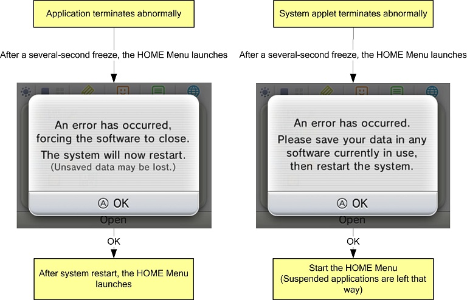

HOME Menu
Overview
- This is the HOME Menu that runs when the Nintendo 3DS starts up. Use this to start or exit applications and applets.
Description
- Banner models are only supported if they are output from
NW4C_ForBanner, which is the NW4C environment for creation of banners.
Proprietarily output banner models do not appear on the Developer HOME Menu. A message to this effect will be displayed on the lower portion of the top screen.
- The process of entering and exiting the HOME Menu and other system applets (such as the Notifications applet) sometimes gets stuck for a long time. We're not sure how to fix the bug at this time.
- When a CTR card, DS/DSi card, or SD card is slowly inserted or quickly removed and reinserted, sometimes the application icons do not appear correctly in the HOME Menu. However, this is not a bug; it is part of the specification.
How to Use the Debugging Features
- By pressing the X and Y Buttons at the same time, you can display bars used to measure banner processing. The length of the bar at the top represents how much, at 100%, can be processed in a single frame (for comparison); the second bar from the top indicates CPU processing; and the third bar from the top indicates GPU processing. Green indicates processing of less than 75%. Yellow indicates processing between 75 and 80%. Red indicates processing greater than 80%. Modify your application's banner so that these processing bars are green or yellow. Fix your banner if the processing bars are red. (Note: See
$CTR_SDK\documents\tools\ctr_BannerModelConverter.html for details)
- By pressing the X Button and Y Button at the same time, you can display the HOME Menu's region, language, creation date/time, and revision information.
This information is very helpful to Nintendo when it is provided along with any questions that you may have.
- While the processing-load bars are displayed, press the X Button and the B Button at the same time and reinsert the game card to cycle through the regions and languages displayed for the title name (two-line and one-line display) and the banner model.
With this feature, you are only changing the display, and the operation remains in the original region and language.
You can use this feature when creating banners to check model data and title names.
(When you check title names, choose to display the icons lined up a single row.)
- To delete the icon database and icon cache, start the HOME Menu while holding down the X Button and Y Button.
- The icon database is a NAND database on the system that stores the icons of applications that have been run. The Activity Log displays the icons stored in this database. Once an icon has been stored here, however, the database will not be updated if the application is started again with a different icon, unless the
TitleInfo (combination of category and UniqueID) and version specified for the application by makerom have changed.
If you change the icon and want to check it, you must delete the icon database.
- The icon cache is a repository of application icon data stored on the SD card so that icons on the HOME Menu load faster. Once an icon has been stored here, however, the icon cache will not be updated if the application icon changes, unless the application's
TitleInfo and version have changed. If you change the icon and want to check it, you must delete the icon cache.
- The China market HOME Menu (and only this one) has a feature for pausing the animation when the application starts, mainly for confirming data like ISBN numbers.
If you simultaneously press the Y Button and B Button and start the application, the text "ISBN check mode." displays in the upper-left part of the upper screen but the startup animation does not stop unless you press some other button.
It is possible to debug an application in the HOME Menu environment, but you must follow the steps below.
- If using the PARTNER-CTR Debugger:
- With the HOME Menu running, load the target application in emulation memory and reset.
- Run the target application from the HOME Menu.
- Execute the
attacha command from the debugger software's command window.
- In the debugger software's command window, run
ls target_application.axf to load the debug information.
- If you are using IS-SNAKE-BOX, IS-SPR-BOX, or IS-CTR-BOX:
- With the HOME Menu running, load the target application in emulation memory.
- Run the target application from the HOME Menu.
- Execute the
attacha command from the debugger software's command window.
When you resume execution of the application after this procedure, you can debug its source code as you would when running it from the development menu.
Other
- You can use the debugger's card emulation feature to start CCI-formatted ROM as CTR card applications from the HOME Menu, and confirm banners.
- If you are using the PARTNER-CTR Debugger:
- Use the debugger's
rdc command to load the CCI file into emulation memory
rdc ***.cci
- Reset the debugger using the debugger's
reset command.
- If you are using IS-SNAKE-BOX, IS-SPR-BOX, or IS-CTR-BOX:
- Use the debugger's
rdc command to load the CCI file into emulation memory
rdc ***.cci
- If you do not set
BasicInfo in the RSF file when you run makerom, you will be unable to start applications from the HOME Menu. For more details on these settings, see the ctr_makerom section in the documentation included in the CTR-SDK.
- The system will stop and the 3DS logo screen will appear if an application is started from the HOME Menu and the
nn::applet::Enable function has not been called. Note that the nn::applet::Enable function is not called in some of the sample demos.
- Features that cause the application to exit, such as a jump to the System Settings, are not available when attached to the debugger. When verifying this feature, either do not attach to the debugger, or run it on development hardware.
- Starting with System Updater 0.17.6, we added a feature that automatically returns you to the HOME Menu when applications or system applets end abnormally.

Applications/applets end abnormally in situations such as when the NN_PANIC macro is used or when access to a NULL pointer occurs.
However, if "Break Stop" is enabled in Config, you will not be automatically returned if the application is handling exceptions on a proprietary basis. Furthermore, the automatic return feature cannot be used in all situations.
Revision History
- 2014/08/07
- Added information about IS-SNAKE-BOX.
- 2014/03/10
- Added information about IS-CTR-DEBUGGER.
- 2012/07/13
- Removed from the description the note about the memory leak that occurs when textures that are referenced from multiple materials are switched in contextual banners.
- 2012/05/23
- Added a note to How to Use the Debugging Features about the feature that pauses the application startup animation.
- 2012/04/24
- Added a note in Description about a contextual banner bug.
- Added a description in Other about the behavior when an application/system applet ends abnormally.
- 2011/11/18
- Deleted sentences from Description about slow application startup times and rare problems with execution halting.
- 2011/10/19
- Added information specific to limitations when using the debugger.
- 2011/10/07
- Added information about inserting and removing SD cards to the description.
- 2011/09/02
- Added "Using the Debugger."
- 2011/08/26
- Initial version.
CTR-06-0206-011-E
CONFIDENTIAL